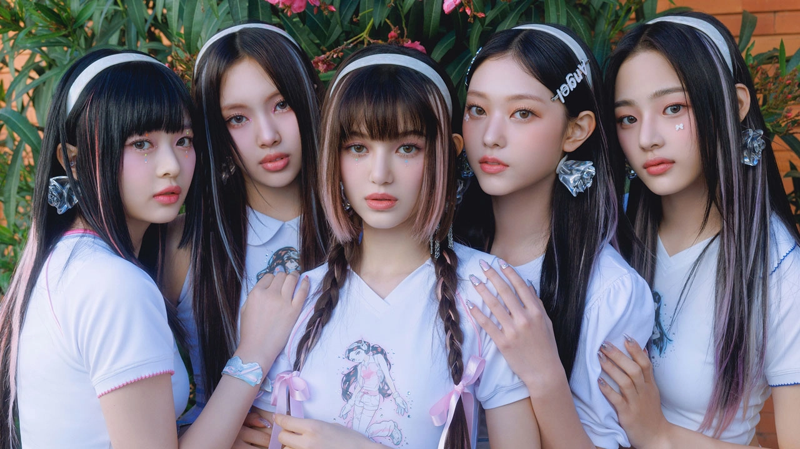
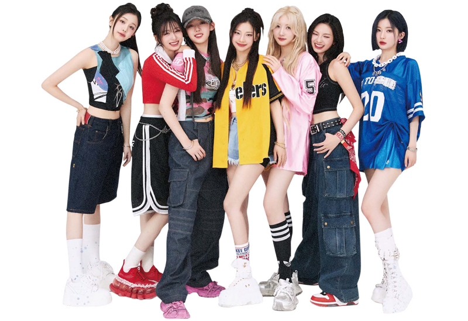

5세대 K-POP의 특징
여기에 1세대 K-POP의 등장 배경, 음악 스타일, 팬문화 등을 정리하면 돼. 예를 들어 서태지와 아이들 이후 아이돌 시스템의 시작, H.O.T, 젝스키스, S.E.S, 핑클 같은 그룹들을 중심으로 특징을 설명할 수 있음.
대표 아티스트
- NewJeans
- BABYMONSTER
- RIIZE
2. NewJeans
| 소속사 | ADOR/HYBE |
| 데뷔 | 2022 |
| 팬덤명 | Bunnies |
| 상징색 | 민트·파스텔 |
- Hype Boy
- OMG
- Ditto
- Attention
- Super Shy
- 하이틴 감성 음원 흥행 강력.
- 영상미·패션 트렌드 선도.
- 데뷔 직후 전세대 인기.
- 멤버 자작곡 중심의 강렬한 사운드가 특징.
- 퍼포먼스/라이브 에너지 강한 무대형 그룹.
2. BABYMONSTER
| 소속사 | YG Entertainment |
| 데뷔 | 2023 |
| 팬덤명 | (비공식 Baemon) |
| 상징색 | 다크톤 |
- Batter Up
- Sheesh
- Like That
- Stuck in the Middle
- Monochrome
- 블랙핑크 후배로 큰 주목.
- 성장 기대치 높은 신인.
- YG 특유의 힙합/보컬/댄스 균형 잡힌 실력파.
- 데뷔 전부터 높은 관심, 강렬한 퍼포먼스 중심.
- 차세대 글로벌 그룹으로 성장 중.
3. RIIZE

| 소속사 | SM Entertainment |
| 데뷔 | 2023 |
| 팬덤명 | BRIIZE |
| 상징색 | 오렌지 |
- Get A Guitar
- Love 119
- Talk Saxy
- Impossible
- Siren
- 성장 스토리 중심 세계관.
- 청량 팝 기반 감성 사운드.
- 청량+트렌디한 음악 스타일로 빠른 팬덤 확장.
- 퍼포먼스/비주얼 기반의 소년미 강점.
- 데뷔곡부터 화제성 높으며 5세대 중심 그룹으로 떠오름.